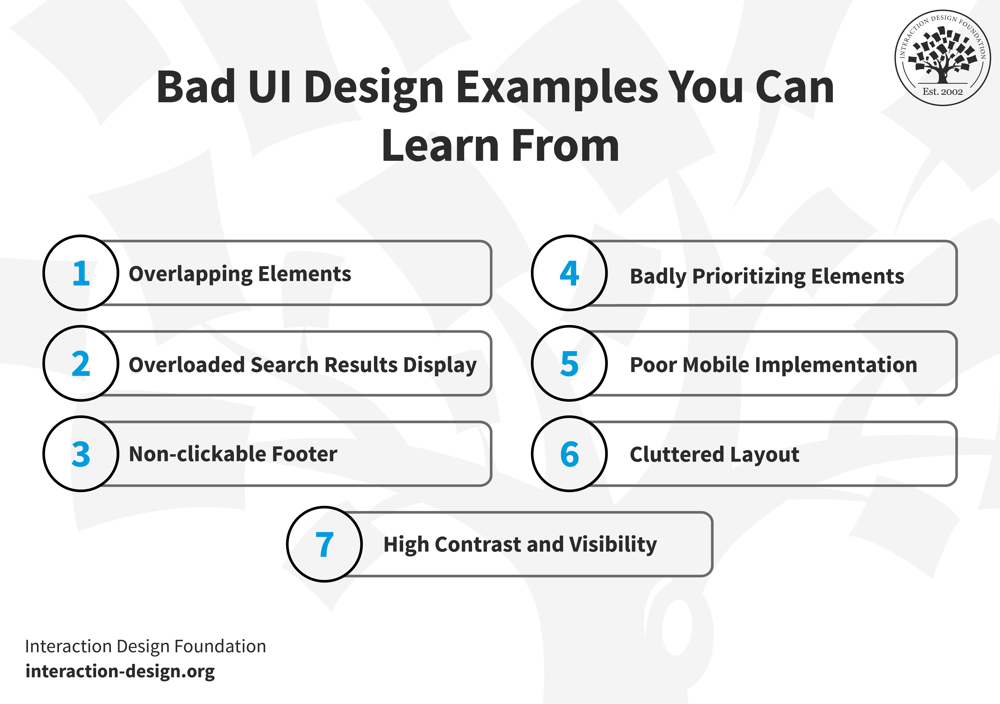

Technology, and its evolution, have caused them to no longer be perceived as neat pieces that easily fit together. They have become dynamic, constantly changing systems that all work in tandem from interactions of external influence like people, code, businesses, platforms, and so much more. To adapt to this ever-changing landscape of digital environments, there must be a mindset and looks further than just the individual pieces of the puzzle, this is where Systems Thinking comes into play, it allows us to see deeper into the connections, patterns, and structure within these environments. This perspective aligns with engineering principles and prioritizes system structure, boundaries, and interactions, rather than just isolating elements (Holt, 2022).
This post will go into detail about what Systems Thinking means from my own perspective. I will also compare it to linear thinking, and how it differentiates from systems thinking and how systems thinking is better. I will also touch of the subject of using model-based approaches to apply this type of thinking to digital systems.
What is Systems Thinking?
To myself, Systems Thinking involves looking at instances through a lens of connectivity. Thinking about how parts worked together to create a phenomenon, rather than focusing on one individual portion. Rather than asking “What single piece caused this issue?” systems thinking turns the perspective into
This mindset comes from the insight that most instances – especially when it comes to complex systems and software ecosystems – are not caused by one individual issue, rather a multitude of different things collaborating to create the result. To give an example, if a glitch or bug shows up in an application, it might not be as simple as a singular line of code. It could very well rather be a plethora of issues, ranging from architecture decisions, constraints in multiple areas, and more.
Those who use Systems Thinking map out these patterns, keeping a focus on the structure and behavior, rather than just relying on snapshots. This mindset is surrounded by understanding systems and their behavior involves identifying relationships, both linear and non-linear, delays, properties, elements that linear thinking usually overlooks.
How Does System Thinking differ from Linear Thinking?
When it comes to linear thinking, problems are usually broken down into individual pieces, isolate issues, and use simple cause-to-effect reasoning to fix problems. This works with issues that involve mechanical portions, controlled environments and more. Mostly where events are easily predictable and the rules governing them are simple.
Digital systems, however, are never that simple. They constantly grow in complexity and adapt to the environment they are exposed to. The smallest of changes can end up causing a ripple effect through the rest of the system, especially towards the connections that are directly affected by that change, which leads to side effects that are difficult to foresee (Meadows, 2008). FI something changes about a website, it can affect engagement metrics, which can create a domino effect that could affect countless other things.
In Laws of UX, Yablonski enforces that digital systems need to consider psychological principles – how people will see, interact, and interpret with their interfaces – and that these behaviors have just as much influence on the behavior of systems as technical constraints and more (Yablonski, 2025). This is a representation of a systems perspective, design decisions have the power to create ripple effects through expectations, long-term habits from users, and expectations.
To contrast, linear thinking could be revamping a websites design and not taking any indication into how it could affect the user base for that website. Decisions, and the mindsets behind them, can cause unforeseen issues with a system, and its performance.
Characteristics of Systems Thinking
1. Feedback loops and their Behavior: Systems Thinking focuses on how outputs on a system will loop back as inputs, which influences that system behavior in the future. Reinforcing these loops and speed up changes, while keeping them balanced can stabilize behaviors. Linear thinking does not take these variables into account.
2. Emergence: Complex systems will often show behavior categorized as “emergent”, meaning that they cannot be predicted by analyzing components by themselves. For an example, the collective user behavior on a website can project itself as patterns that were never specifically coded for.
3. Mental Models: Systems thinking encourages using the mental models, these are internal representations that form how we interpret a system. Identifying these mental models helps reveal these assumptions and broadens systems boundaries, including people, environments, and policies.
These characteristics steeply contrast reductionist, linear approaches that can assume that problems are easily solved by breaking them down into smaller, contextless pieces.
Model-Based Approaches
While systems thinking provides the framework, utilizing model-based designs gives tools to reason with complex systems. Models can start as simplified representations of the world, diagrams, simulations, maps and more. These overall are mea
This appraoch is valuable for several reasons:
1. Interdependencies: Models like a causal loop diagram or other system maps can explicitly show relationships. Rather than expecting a developer to know how a microservice can interact with others, these models clearly show those links, along with tracking dependencies, and exposing hidden couplings throughout the system. This is extremely helpful when teams and codebases are massive.
2. Scenario Exploration: Models allow designers to test hypothetical scenarios before deploying any actual changes, that way any effects can be observed and compensated for. For an example, digital designers could see how changing an onboarding flow might change user retention and its support load.
3. Communication: Models can serve as shared artifacts across different subjects – UX, system engineering, management, developer operations – aligning expectations and production languages. Without these shared models, confusion can arise quickly in decision making.
The academic piece on SYMBIOSIS emphasizes this point: allowing frameworks and models through systems thinking accessible – especially with AI and machine intelligent systems – dramatically improves formulation for problems and reduce barriers to a better understanding of complex structures (Sethi et al., 2025). This work showcases that models are not optional extras; they act as bridges to simplify super complex dynamics into representations that are much more interpretable.
Applications to Digital Design
Systems thinking has actual benefits in designing digital systems:
1. Leverage Points: Rather than optimizing performance metrics for efficiency, designers can look for leverage points, where small changes can have a massive turnaround or effect on the rest of the system.
2. Unintended Consequences: Changes often end up backfiring when secondary effects are brushed off. For example, streamlining a checkout process can help increase conversions but could also overload customer support if not coupled with better help services. Model-based analysis is helpful for capturing these effects.
3. Fostering Innovation: Systems thinking prioritizes long-term viability over short term fixing. In Law of UX, there is an emphasis on human psychology and a reminder to designers to think about users as more than just a number, but as a participant in a system whose expectations will shape the system’s evolution (Yablonski, 2025).
Conclusion
Complex digital systems act more like ecosystems than just machines. The dynamics of these systems come from intertwining technical, social, and behavioral elements. Linear thinking falls short in capturing this type of complexity.
Systems thinking takes the focus from individual elements to internal relationships and patterns over time. It allows designers to map feedback, revisit assumptions, and find leverage points that could influence system behavior. When pairing with a model-based approach, systems thinking becomes much more flexible, models showcase assumptions, facilitate collaboration, and make interactions tangible.
In the realm of digital design, systems thinking with modeling isn’t just helpful, it is necessary for creating resilient, adaptable, and human-oriented technology.
Module 1.2 Blog Post
Systems Engineering as a Life Cycle:
Systems engineers are usually described as those who “build systems”, which is a very simplistic way to look at what they do. Systems engineers are what guide those systems through their entire existence, from the moment of its inception to the moment it is shut down or retired. This perspective usually separates systems engineers from the other branches of engineering. They focus on long-term solutions, system relationships, evolution, and more, rather than just focuses on the parts themselves.
To manage all this information, systems engineers like to use life cycle models. This gives them a brief, but detailed, look of what that system’s life cycle will look like. A life cycle model provides a lot of crucial information, allowing it to organize elements like the design, implementation, deployment, operation, and other considerable parts of the development process. These models help reduce the confusion, the uncertainty, and can help reduce the likelihood of unaccounted issues showing up in the future. In Systems Engineering Demystified, there are three different models of life cycles: linear, iterative, and incremental (Walden et al., 2023). Each of these have their own attributes that allows them to work better for different aspects and scenarios.
This post will cover what those differences are, along with how they work, the thought process behind them, and what scenarios they would be most effective in. It will also go into how these models can shape the mindset and thought process behind systems engineers, and how they approach problems in the real world.
The Purpose of Life Cycles:
It’s important to talk a little more about why these models are important to use in the first place. Systems engineering often involves running into problems that are massive, complex, and take a considerable amount of time. These problems could range from hardware, software, organizations, structure, and so many more. Without this level of structure, things can end up falling apart and cause major issues during the development of maintenance of systems.
These cycles provide a means of structure and keeping everything concise. They make it easier to answer questions later involving when things should be done, how or when they should be tested, responsibility, feedback and more. According to Walden, life cycles models are not meant to be instructions but rather tools to support informed decision-making throughout the system’s life (Walden et al., 2023).
Each of these models have their own priorities. Some of them focus on predictability and keeping control, while others can focus on learning, adapting to environments, and more. Knowing these differences is key to utilizing them to the best of their ability.
The Linear Life Cycle:
The linear model is more than likely the first one that is encountered in systems engineering, this is often referred to as the “waterfall” model, it keeps organization to a concise list of phases. These can often range from design, testing, deployment and everything in-between. All these phases are completed in sequence, one does not start until the one before it is complete.
The biggest strength of the linear model is its clarity. Each phase has a clearly defined start to end, which means that responsibilities are easily assigned to each phase, steps are easily logged and tracked, and it is easier to track progress. This model works well with systems that have stable requirements, understood technology, and constraints around regulations and contracts. Safety-regulated systems involved in aerospace or defense agencies usually involve a linear life-cycle model due to the emphasis on documentation and verification (INCOSE, 2015).
Unfortunately, the linear model has its limitations. It introduces assumptions per-development that all the goals and requirements can be fully grasped by the end of the project. In most modern systems, this is not the case. There are several variables to consider, user needs change, technology’s constant evolution, and more. Since portions like feedback occur towards the end of that process, errors that are discovered through development can become problematic.
For systems engineers, this linear model helps upfront thinking but distances from adapting and ability. Using this model, systems engineers need to be very diligent during the early phases of this process, since early decisions can have a major impact on later instances.
The Iterative Life Cycle:
The iterative life cycle model was created as a response to the limitations of the linear approach. Instead of just progressing through a development cycle once, this cycle emphasizes going through it several times, through evaluation, refinement, and more. Multiple aspects of said development are revisited as a result.
In an iterative life cycle model, early iterations of a system could be incomplete or missing parts. Constantly going through the development cycle allows feedback to be placed through that process. According to Walden, iteration allows systems engineers to manage uncertainty effectively by using development as a learning process rather than a one-and-done plan (Walden et al., 2023).
One of the main advantages of the iterative cycle is risk reduction. By testing earlier and more often, problems, both conceptually and technically, can be identified and helped before they become too engrained in the system. Iterative life cycles can also help significantly with feedback, allowing people to access an earlier build while inviting comments or critiques that could be implemented later.
Where there are advantages, there are also challenges. Constant cycling can lead to scope creep, scheduling issues, and fatigue amongst stakeholders. Engineers need to balance flexibility and discipline to keep these issues at bay. This involves thinking skills and evaluating with additions add value rather than just delaying progress.
The Incremental Life Cycle:
The incremental life cycle model shares some aspects with iterative models but focuses mostly on delivering functional pieces of a system in increments. Rather than starting the development cycle from the beginning, the incremental cycle is built around focusing on certain aspects of a system and deploying them once they reach a certain level of functionality. This approach lets stakeholders realize the value in decisions while also validating the requirements for the project in real-world usage (Boehm, 1988).
Incremental development is best suited for systems that can show considerably more value over time and released gradually. Software-crucial systems are a good example, showing that basic functionality can be implemented first, and then extra features can be added in later. This model supports early feedback while also validating the requirements set for the project.
Walden notes that incremental models encourage a strong relation between development and stakeholder value. Each increment in development serves as a result that can be tested in real-world aspects. This gives it an opportunity to justify its further investment and development (Walden et al., 2023).
The challenges with the incremental life cycle involves long-term integration and overall coherence. As more and more increments are added, the system must be robust enough to support these additions and not end up becoming too complex or difficult. Systems engineers play a crucial part in making sure that small increments do not compromise long-term stability.
Comparing These Models:
There is no life cycle that is considered the “best.” Each one has their own strengths and are used for specific instances, with trade-offs involving flexibility, learning, and risk. The linear model provides a straightforward “start to finish” process. The iterative model uses something similar but allows engineers to revisit aspects of the development cycle while implement feedback and fixing other issues. Finally, the incremental cycle focuses more on keeping the value of a project through slow but complete implementation, ideal for systems that tend to change over time.
Many real-world systems use a mesh or hybrid of different elements of these cycles to strike a balance. A system may follow a majority linear structure at an architecture level, while using iterative and incremental cycles during testing, development, feedback, and more. Systems engineers need to understand not only the models themselves but also how to tailor and integrate them to fit their needs and situations (INCOSE, 2015).
The Role of the Systems Engineer:
No matter which life cycle is chosen, the role of the systems engineer stays relatively the same: to keep a holistic view of the system while also guiding it to a successful outcome. Life cycles can change how this role is carried out, but the thought process of the system does not change.
For linear models, systems engineers act as someone to uphold requirements and guidelines, keep consistency and traceability. In iterative models, they act as a facilitator of learning, helping teams interpret feedback into change and adjusting to do so. For incremental, a system engineer acts as an integrator and an architect, making sure every addition can fit into the overall vision.
Making sure that life cycles are understood is what ends up shaping how systems engineers think about time, responsibility, and change. Rather than looking at development as a single instance, it is seen as an ongoing process that extends all the way to the end of the systems life cycle.
Conclusion: Life Cycles as Thinking Tools:
Life cycles are much more than just diagrams to visualize a process; they are examples of how a systems engineer thinks about the development process and its complexity, change, and uncertainty. The linear, iterative, and incremental models offer three distinct pathways to tackle that process. They are three different perspectives on how a system can be developed and sustained. By knowing their assumptions, limitations, and strengths, is it easier to determine which models support the challenges they will be facing.
Effectively engineering systems is not just about following a rigid model but using them as guides. As shown in Systems Engineering Demystified, successful systems engineers remain flexible, reflective, and focused primarily on the system’s long-term success, rather than settling for short-term convenience (Walden et al., 2023). These models provide the structure to support that mindset, assisting engineers work through complexity with full clarity and intention.
Designing for the People
Why Design Begins with the Mind
“Designing with people in mind” sounds obvious to some, it even sounds redundant. Why else would one design for anyone else? History tells us otherwise, with poor design choices, confuding interfaces or navigations, and an overall frustration in digital environments. Most designs end up prioritizing technology, a certain aesthetic, or maybe efficency that detaches it from its human audience. Human-centered design choices and changes become a challenge by insinuating that effective designs start with people, and not systems.
Aligning the mindset to design for people involves a simple truth, humans are not machines. They are not rational, nor do they have perfect attentiveness, nor are they infinitely patient. Humans are shaped by limits in cognition, visual biases, emotions, habits and more. Once designers have a grasp of that, how perception can be used, how to direct attention, and how empathy can inform decision making, experiences can feel more intuitive rather than instructional. Human-centered does not have users adapts to systems, but rather, the opposite.
This post will explore what it truly means to actualy “design for people” by utlizing and examining the principles of human-centered design. This post will show perspectives from ISO 9241-210 and IDEO, while appling inights of perception, visual hierarchy, and the psychology of cognition. Pulling from the four UX laws, from Jakob’s, Fitts’s, Hicks’s, and Miller’s, this post argues that good design is an act of empathy and grounded with science.
Human-Centered Design
The idea of a “human-centered design” (HCD) is that it prioritizes the users needs, limits, contexts, and more, at the forefront of the design process. Rather than looking at usability and accessibility like an afterthought it is an integral portion and influence of the design process by implementing user understanding and evalution.
In ISO 9241-210, human-centered design is referred to as an “approach to systems design and development that aims to make interactive systems more usable by focusing on the use of the system and applying human factors and ergonomics knowledge” (ISO, 2019). The definition is an emphasis on usability, efficiency, effectiveness, and more while keeping the importance of human behavior in mind.
To contrast, IDEO’s Field Guide to Human-Centered Design looks at HCD as more of a mindset rather than a standard. IDEO put and emphasis on empathy, immersion, and storytelling in the user’s experiences. Rather than starting the design process with requirements and/or constraints, the design process begins with observations, watching how their users behave, hearing their frustrations , and discovering possible needs that might not be expressed directly (IDEO, 2015).
Both perspectives have their own idea of the human experience and how to prioritize it. However, there are differences: ISO provides a structured framework, suitable for large organizations and environments with regulations. IDEO offers a much more creative and explorable approach to HCD, valuing emotional insight and experimentation. Both of these perspectives suggest that design with people in mind involves rigor and empathy, while measuring usability outcomes and deep human oriented understanding.
Perception and Attention
Something that is overlooked in the design process is that users tend to experience interfaces visually before they experience it cognitively. Perception precedes and comes before comprehension. If users cannot comprehend or determine where and what to look for, usability crumbles before it even starts.
In Designing the with Mind in Mind, Johnson explains that human perception is built on selectiveness and goal orientation (Johnson, 2020). Users do not scan an interface evenly or consistently; rather, they look for visual cues that show relevancy. Contrast, color, spacing, size, and other elements are all influential parts that draw attention. This is an instance where visual heirarchy becomes crucial.
To give an example, on a sign in screen, if the “Create Account” button is much more prominent than the “Sign In” button, users could possibly make errors, specifically returning ones. The functionality is not the issue, it is the perception. Visual hierarchy translates into priority and importance, when it conflicts with users and their intent, it ends up causing friction.
This visual principle connects to Jakob’s Law, stating that most users spend most of their time on other websites and have an expectation for new designs to work similar to familiar ones (Laws of UX, 2020). When established patterns are disrupted by designers, users need to relearn behaviors, which ends up increasing effort in cognition. Designing in terms of perception involves leveraging familiarity, rather than fighting against it.
Visual Hierarchy
Visual Hierarchy isn’t decoration, it is visual instruction. Through hierarchy, design can guide users’ eyes, reduce decision-making, and clarify relationships. Effective use of visual hierarchy allows users to answer critical questions like: Where am I? What can I do here? What can I do next?
In digital interfaces, hierarchy is often conveyed through:
Size and Scale (larger elements are seen as more important)
Color and Contrast (bright and bold elements draw more attention)
Whitespace (seperation can clarify grouping)
Typography (headings can signal structure)
These principles are in alignment with Miller’s Law, which suggestes that a person can hold seven (give or take) items in their working memory (Laws of UX, 2020). By chunking information together visually, designers can help reduce cognitive strain and visual overload. To compare, a giant navigation bar with fifteen different options could force users to overthink, while a hierarchy that group scategories together could let users recognize, as opposed to recalling.
Johnson empahasizes that recogntion is much easier than recalling. VIsual hierarchy allows support to recognition by making visual structure. When a hierarchy is absent, users will have to mentally organize information themselves, leading to possible error and fatigue (Johnson, 2020).
Decision-Making and Cognition Load
Decisions in designs aren’t neutral, they either impede or accelerate a user’s action. Hick’s Law states that the time it takes to make decisions increases with the more complex and number of choices become available (Laws of UX, 2020). This principle has important implementations and implications for menus, onboarding flows, desture heavy instances, and more.
For an example, a camera app showcases every single possible shooting mode on the main screen. While this could look professional or powerful, this could prove to be extremely overwhelming for beginners. A human-centered approach could be prioritizing the simple but most utlized actions on the main screen, and putting the advanced features in a seperate menu or screen. This respects both amateurs and professionals while not compromising usability.
IDEO’s Field Guide prioritizes testing and prototyping mostly because designers have poor judgement of complexity. What could feel intuitive to a designer could feel horrible to a user. In the world of design, empathy is not emotional softness, it is cognitive humility.
Interaction and Effort
While most of the UX discussion is focused on the screen, Fitts’s Law serves as a reminder for designers that interaction is as physical as it is cognitive. Fitts’s Law says that the time that’s required to move to a target depends on the distance to and the size of said target (Laws of UX, 2020). Items that are larger, closer, and targets are easy to select.
This principle is why most mobile interfaces places the majority of thier most important items towards the bottom of the screen within reach of the user’s thumb. It is also the explanation to why smaller and less contrasted icons can cause frustration, not because of carelessness, but because the design neglects human motor limits.
ISO 9241-210 highlights ergonomics as part of usability (ISO, 2019). Designing for people involves accounting for fatigue, needs in accessibility, and real-world usage situations, this includes one-handed usage, motion and/or low attentin environments.
Empathy as a Design Skill
Empathy is often looked at as a soft skill, but in human-centered design, it is incredibly important for capability. Empathy allows designers to compensate fo frustration before it becomes an issue. It allows them to recognize that errors are design failures rather than user failures, and create systems that feel respectful as opposed to feeling demanding from its users.
IDEO’s approach looks at empathy as an immersive understanding, observing not just what users do, but why they do it (IDEO, 2015). ISO builds off this by requiring an iterative evaluation based on user feedback (ISO, 2019). Both of these perspectives reinforce the idea that empathy isn’t guesswork and is learned through user engagement.
The four UX laws also support this stance on empathy. Jakob’s Law dictates respect towards user habits. Hick’s Law talks about decision fatigue. Miller’s Law talks about memory constraints. All of these laws, at their core, serve as a reminder that humans are finite, and good design choices can respect those limitations.
Designing for People and Designing for Reality
Designing for people is essentially designing for reality, not for ideals. It involves accepting that users could skim, forget, misinterpet, and possibly get distracted, and build systems that work anyway. Human-centered design birdges the gap between psychology and practice, along with empathy and evidence.
ISO 9241-210 privodes the necessary structure the ensure that the design is usable and the usability is repeatable. IDEO’s Field Guide provides the right mindset to ensure that a design can stay humane and always remains grounded. Visual hierarchy and perception form how users interact and understand interfaces before they can ever click. The four laws of UX offer guardrails, prevent designers from ever veering too far off the idea and overestimating human capacity.
To conclude, designing with people in mind means that the question needs to shift from “Can users figure out how to use this?” to “Why do they have to?” When designs align with the perception and needs for humans, including their perceptions, decisions, and more, usability disappears and experience takes over.
What Makes Digital Systems Actually Usable?
Memory and Psychology Behind the Interfaces of Everyday Systems
Digital systems are only considered to be and feel “usable” when they can align with people’s thinking, not how designers and developers intend for them to think. Interfaces reach their peak effectiveness by supporting memory, leveraging users and their habits, and working with the shortcuts that users lean on daily. When usability falls through, it rarely falls on the fault of the user, rather, on the design ignoring the cognitive limits and the expectations of humans.
This post will discuss how memory and mental models can shape interaction, along with how consistency and feedback can improve usability, and how poor design choices can increase the overall cognitive load on their users. This post will draw from the course readings, like Laws of UX and Designing with the Mind in Mind, along with external sources and observations. This post will go into how usability works in tandem with psychology, especially when following the limits of working memory along with mental shortcuts and their inevitability.
Mental Model, and How a User can Understand Systems
Human memory is limited, and in order to maintain that memory, digital systems need to be able to adapt to this reality. Working memory is the system used to process information within a short-term amount of time, and can only hold a small number of items at a time, usually 4-7 chunks of information (Yablonski, 2020). When an interface ends up demanding too much memory recall, it is common for users to struggle with completing tasks efficiently (Johnson, 2020).
Rather than expecting users to memorize processes, a good design philosophy leans on recognition over recall. For example, breadcrumbing navigation allows users to have somewhat of a grasp on where they are in a system without needing to remember their entire path. Similarly, autofilling features can help reduce memory loads by carrying previous information across screens. Designers need to account for these expectations since users rely on affordances to guide interaction (Norman, 2013).
Mental models also play an important role as well. A model is a user’s personal understanding of how an interface works and is formed through past experiences and constant repeated interactions (Yablonski, 2020). When interfaces align with patterns like shopping in e-commerce or food menus in mobile apps, users can transfer their existing knowledge and move quicker towards their goals.
Unfortunately, misalignments in mental models can create confusion. A relevant example is when Snapchat redesigned their interface in 2018, leaving many users confused when it came to trying to find familiarity in its functions. This redesign ended up clashing with users’ existing expectations (Yablonski, 2020). This lack of connection directly ties into how usability and prior knowledge about behavior go hand-in-hand.
From my personal experience, different social media apps offer their own access to the camera in order to create take pictures and post them to the platform. Regardless of what brand it is, there are consistencies like placements of the shutter button, settings, and more. If something were to be in a different place, it would definitely throw off my prior knowledge and would prove to be unnecessarily difficult. These design choices could cause users to slow down and worry about where things are, rather than focusing on the moment.
Interface Consistency and Feedback: Usability’s Backbone
Consistency and feedback are foundational principles that help make digital systems feel intuitive. Consistency in interfaces reduces the need for learning time since users don’t need to interpret new patterns on every single new system. According to The Laws of UX, familiar design patterns allow people to rely on past experience, while reducing cognitive effort (Yablonski, 2020).
Consistency operates on multiple levels: navigation and its structure, terminology, visual design, and interaction behavior. For example, Apple and their device ecosystem is a good demonstration of cross-device compatibility and consistency. Users who can navigate an iPhone can navigate or at least familiarize themselves with the iPad or the Mac interface, based on its intuitiveness and consistency. This consistency strengthens mental shortcuts and reduces overall cognitive load.
System feedback is equally as important. Feedback from the system is confirmation that actions have been recognized and are currently being processed. Some of the ways that this can be portrayed can be a loading spinner, confirmation message, or a progress bar, reassuring the users that the system is doing its job properly. Without any feedback, users could end up repeating actions unnecessarily or assume something went wrong.
For an example, consider uploading a large file. After confirming the upload, a progress bar will show you that the task is currently working. Without it, it could give off the impression something has either gone wrong, or give the notion that nothing is happening. Feedback reduces uncertainty and gives a sense of control, both being essential to usability.
From personal experience, whenever I find myself uploading edited photos, I always like to know when something is working and how far it’s been doing it. Adobe Lightroom likes to show how far an upload or an export is going to take through a progress bar. Sometimes, nothing will happen for a considerable amount of time, which ends up with me refreshing everything and starting all over. Mostly, this is only because I decide to export or import hundreds of photos at once, so it’s mostly my own fault.
When Design Fails, and the Cost of Poorly-Managed Interfaces
Cognitive load is referring to the mental effort needed to properly interact with a system (Johnson, 2020). A higher cognitive load occurs when a user needs to process extra information, mostly excessive, decipher unclear layouts, and make unnecessary decisions. Research shows that when you exceed the memory capacity of information, performance will decline, and frustration will rise (Johnson, 2020).

Poor design can often create unnecessary cognitive loads through cluttered layouts, inconsistencies in navigation, or a lack of feedback. For example, websites that tend to hide essential services tend to force users to stop and re-interpret things rather than instinctively acting on them. Similarly, forms that require users to re-enter identical information throughout the form, which ends up violating memory principles and ends up increasing frustration amongst the users.
Readings throughout the course emphasize that designers need to minimize unnecessary elements, reduce the number of choices, and leverage patterns to lower cognitive load (Yablonski, 2020). Extra design features like animations, graphics, or redundancy in information will end up consuming mental resources without helping users accomplish the necessary tasks.
One personal example is trying to navigate through buying sports tickets. I usually buy tickets through Ticketmaster and I find their website to be a little too cluttered and messy. Whenever I want to find a seat or some section I want to sit in, I never actually know what the price is until I have to click on a seat, and then I’m met with what the price actually is. Instead of focusing on the final goal of buying tickets, you have to roll the dice on figuring out where you want to sit, and how it can fit into your budget and so on. Interfaces that showcase excessive options and unclear information increase the cognitive load, which is shown by research to significantly reduce efficiency and increases frustration from users (Sweller et al., 2019).
Tesler’s Law and Complexity’s Reality
Tesler’s Law says that every system will eventually have some sort of unavoidable complexity; this cannot be avoided and it can’t be entirely eliminated. You can, however, decide on whether or not that burden is placed on the user or the system (Yablonski, 2020). Usable systems tend to shift as much complexity as it can away from their users and input them into automated processes.
A good example of this is email composition. Modern clients for emails will automatically file through possible senders and their information while you type. The complexity of knowing and absorbing these addresses is handled by the system, reducing cognitive load and speeding up overall interaction (Yablonski, 2020).
Tesler’s Law also goes into why over-simplistic interfaces can fail sometimes. Removing too many features could end up with hiding essential information, which ends up causing users to perform extra steps or guess what to do next. The goal here isn’t full minimalism, but simplifying in a strategic manner while respecting the user’s complexity.
Designers have to recognize that usability does not immediately mean eliminating difficulty in its entirety. It means managing complexity thoughtfully, and by automating tasks with repetition and giving clear guidance, systems can focus more on helping their users with meaningful work and not on complexity overload.
Designing with the Mind in Mind
The assigned reading Designing with the Mind in Mind talks about several principles relevant to usability. Two important concepts in particular are recognition over recall and working memory limitations.
For starters, recognition is much easier than recall. Interfaces that display available options instead of expecting users to remember commands are much more effective (Johnson, 2020). Visible menu options can reduce the overall need for memorization compared to hidden gesture controlling.
To build off of this, memory and its limitations essentially mean that users can’t track complex instructions over a multitude of steps. Designers can break tasks into multiple segments and provide clear cues. Progress trackers, step indications, and wizards are a good way to help maintain orientation without needing to store excessive amounts of information mentally.
Both of these principles reinforce how important reducing mental effort and supporting humans and their behavior is in creating systems. When designers end up ignoring those limitations in cognition, usability ends up suffering, even if the interface itself looks appealing.
Conclusion: Psychology in Usability
Usable systems find success because they align with human cognition. Constraints in memory, mental models, and shortcuts can shape how people end up interacting with technology. Interfaces that can embrace consistency, while also providing clear and concise feedback, will reduce confusion and build up trust. All while poorly designed systems end up overloading cognition and maximizing frustration.
Tesler’s Law is a reminder that complexity, no matter how hard you try, will always be here. However, it can be redistributed to not be as much of an issue for users. Designers who can move complexity or absorb it through engineering can create experiences that feel almost effortless to use. Principles from Designing with the Mind in Mind emphasize that every design decision has to be guided by familiarity, cognitive limits, and recognition.
To conclude, usability does not entirely revolve around aesthetics by themselves or sophistication. It involves empathy, understanding how people think, act, and remember. By prioritizing people and their minds in the design process, digital systems not only become functional or usable, but they feel much more personal.